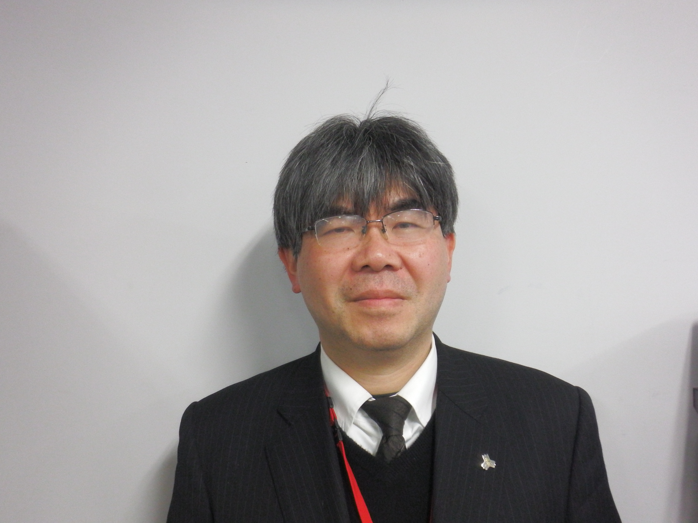

先生図鑑とは
先生紹介
学科一覧
機械工学科
電気情報工学科
電子制御工学科
情報工学科
環境・建設工学科
人文科学科
数理科学科
先生を検索
学科から検索
研究分野から検索
研究室マッチング
ホームページ

高見 昭康
機械工学科 / 教授
#ものづくり技術
#材料力学
芦田 洋一郎
電気情報工学科 / 准教授
#自動制御
堀内 匡
電子制御工学科 / 教授
#人工知能
#強化学習
山口 剛士
環境・建設工学科 / 准教授
#環境微生物
#衛生工学
村橋 究理基
情報工学科 / 助教
#惑星気象学
#火星
大西 永昭
人文科学科 / 准教授
#日本近代文学
#日本語